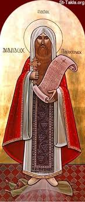

to the
Coptic Hymns Website
This website will have multiple coptic hymns ranging from tasbeha, to Pascha, to Joyful Season Hymns, and much more uploaded weekly.
The day of the Lord will come like a thief. The skies will disappear with a loud noise…So what kind of people should you be?
2 Peter 3:10-11
On this day the Lord Christ performed a great miracle for the honorable Saint Abba Athanasius, 20th Pope of Alexandria. When Emperor Constantius, the son of the righteous Emperor Constantine, adopted the teachings of Arius who said that the Son was, after not being, and therefore not equal to the Father, he sent a man, whose name was Gawargios, to Alexandria. He also sent along with him 500 horsemen and letters appointing Gawargios patriarch of Alexandria instead of Abba Athanasius the Apostolic. He ordered Gawargios to support the faith of Arius and slay all who would not be obedient to him.
When this man arrived to the city, he preached the teachings of Arius but only a few people of the city accepted his teachings. Therefore, he killed a large number of people, and St. Athanasius hid himself for a period of six years. After which he went to the city of Constantinople, and asked Emperor Constantius either to restore him to his See or to slay him so he would receive the crown of martyrdom. But the Emperor ordered his men to place him in a small boat and to leave him in the sea without food or water or a guide. The Emperor thought that he would die of hunger or thirst or get drowned. In this way he hoped to get rid of the saint and his admonition to him for his heresy, and they did with the saint as the Emperor had ordered them.
The boat sailed along smoothly and in peace with the Lord's will and His care. St. Athanasius was surrounded and cared for by the Angels until he arrived in Alexandria three days later. When the believers heard that their shepherd had arrived, they rejoiced and went out to him and received him with candles and songs of praise. Then they brought him into the church and expelled Gawargios and his followers.
St. Athanasius dedicated that day as a great feast to the Lord.
May his prayers be with us and to our God is the glory and honor now and ever unto the end of ages. Amen